PROGRAMA ACADÉMICO · PLAN DE ESTUDIOS 2027
Licenciatura enFilosofía, Políticay Economía
Una formación interdisciplinaria que complementa y potencia tu carrera de origen
Sedes Santiago y Concepción

Usa → o desliza para avanzar
¿Por qué estudiar la Licenciatura?
Programa único en Chile: una sólida formación disciplinar unida a la vanguardia de los programas interdisciplinarios.
Está diseñada para complementar y enriquecer la formación de tu carrera de origen, ampliando tu perspectiva para enfrentar los desafíos actuales y futuros de tu campo profesional.
Además, te integra a la comunidad Faro UDD y a sus instancias de vinculación, discusión y formación.
Doble grado académico
Obtienes el grado de Licenciado en FPE junto a tu carrera y potencias tu perfil en un mercado laboral dinámico.
Pensamiento crítico y analítico
Desarrollas herramientas para analizar problemas complejos desde tres disciplinas que dialogan entre sí.
Un modelo probado en el mundo
El modelo PPE se imparte en más de 50 universidades y aporta una visión colaborativa e integradora.
Flexible e integrada a tu carrera
Los cursos se articulan con la malla de tu carrera de origen, y algunos se dictan en modalidades especiales.
6
semestres
300
créditos UDD
3
líneas formativas
2
sedes: Santiago y Concepción
faro.udd.cl
2
Perfil de egreso y competencias
PERFIL DE EGRESO
Formado desde un enfoque interdisciplinario para analizar críticamente los acontecimientos sociales, políticos y económicos que desafían la toma de decisiones en el mundo actual.
Se caracteriza por su capacidad analítica y pensamiento global para identificar preguntas y temáticas relevantes para el desarrollo de cualquier organización, así como por su liderazgo, trabajo colaborativo y excelencia académica.
COMPETENCIAS ESPECÍFICAS
01
Integración de conocimiento desde la filosofía, la política y la economía
Integrar conceptos y metodologías de las tres disciplinas para analizar y resolver problemas complejos, evaluando el impacto ético, político y económico de las decisiones.
02
Análisis crítico de los procesos sociales, políticos y económicos
Comprender en profundidad los fenómenos que afectan a la sociedad, cuestionar sus supuestos, interpretar datos con rigor y construir argumentos bien fundamentados.
+ COMPETENCIAS GENÉRICAS UDD FUTURO
Emprendimiento y Liderazgo
Responsabilidad Pública
Innovación
Pensamiento Crítico
Compromiso Ético
Comunicación
Visión Analítica
Visión Global
Transformación Digital
faro.udd.cl
3
Tres líneas formativas, un enfoque integrado
Filosofía
40créditos UDD
Herramientas para analizar en profundidad las problemáticas sociales contemporáneas, desde la historia de la filosofía y los grandes sistemas de pensamiento sobre el ser humano y la sociedad.
S1
Historia de las Ideas Políticas
S2
Formación del Mundo Moderno
S4
Filosofía Política Clásica
S5
Filosofía Política Moderna
S6
Debates Políticos Contemporáneos
Política
40créditos UDD
Inmersión en los debates contemporáneos sobre la democracia y sus desafíos: populismos, autoritarismos, inteligencia artificial, cambio climático y migración.
S1
Principios de Filosofía, Política y Economía
S2
Política y Democracia
S3
Ideas y Debates en Chile
S4
Gobierno y Políticas Públicas
S6
Análisis Político
Economía
40créditos UDD
Comprender los fenómenos económicos de nuestro tiempo y vincularlos con el acontecer político, recorriendo las ideas, principios y sistemas económicos más importantes de la historia.
S1
Historia del Pensamiento Económico
S2
Procesos de Mercado
S3
Teorías de Mercado
S3
Filosofía de la Economía
Articuladora · Filosofía + Economía
Articuladora · Filosofía + Economía
S4
Introducción a la Elección Pública
Articuladora · Política + Economía
Articuladora · Política + Economía
S5
Mercado y Sociedad
faro.udd.cl
4
Malla curricular flexible
AÑO 1
AÑO 2
AÑO 3
Semestre 1
Semestre 2
Semestre 3
Semestre 4
Semestre 5
Semestre 6
Filosofía
40 créditos
Política
40 créditos
Economía
40 créditos
Historia de las Ideas Políticas
Formación del Mundo Moderno
Filosofía Política Clásica
Filosofía Política Moderna
Debates Políticos Contemporáneos ◆
Principios de Filosofía, Política y Economía
Política y Democracia
Ideas y Debates en Chile
Gobierno y Políticas Públicas
Análisis Político ◆
Historia del Pensamiento Económico
Procesos de Mercado
Teorías de Mercado
Filosofía de la Economía
Bimestral · 4 créditos
Bimestral · 4 créditos
Introducción a la Elección Pública
Bimestral · 4 créditos
Bimestral · 4 créditos
Mercado y Sociedad ◆
Actividad de
Licenciatura
Actividad de grado
Licenciatura
Actividad de grado
Créditos UDD
24
24
20
20
16
16
+ 180 créditos UDDde tu carrera de origen
Total: 300 créditos UDD170 SCT-Chile · 6 semestres
Malla referencial: la secuencia se ajusta a la malla de cada carrera de origen y algunos cursos se dictan en modalidades especiales.
■ Asignatura articuladora entre dos líneas ◆ Con prerrequisito
faro.udd.cl
5
Admisión
REQUISITOS DE POSTULACIÓN
1
Ser alumno regular de tu carrera de origen al momento de postular.
2
Haber cursado y aprobado el primer año de tu carrera de origen.
3
Estar dentro del 50% superior de rendimiento académico de tu promoción.
4
Contar con la autorización del director de tu carrera y de la Dirección Académica de Faro UDD.
PROCESO
Segundo semestre
Postulación con ficha presencial en Faro UDD
Diciembre
Publicación de resultados
Sin costo adicional
Mientras cursas el programa dentro de la duración formal de tu carrera de origen (Título IX del Reglamento del Alumno Regular de Pregrado).
Modalidades especiales
Algunos cursos se dictan en formato b-learning, asincrónico o streaming, para compatibilizarlos con tu carrera.
Grado y salida
Obtienes el grado al aprobar todas las asignaturas y la Actividad de Licenciatura. Si dejas el programa, puedes certificar el Minor en FPE.
Coordinación de Pregrado Faro UDD: Magdalena López Director de la Licenciatura: Jorge Cordero faro.udd.cl
6